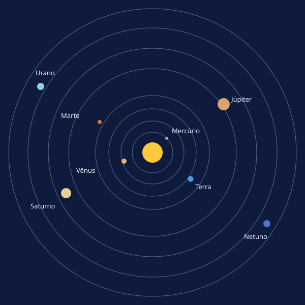
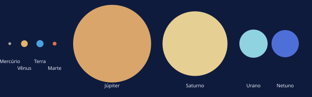
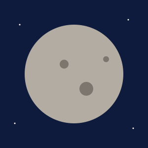
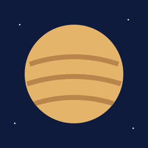
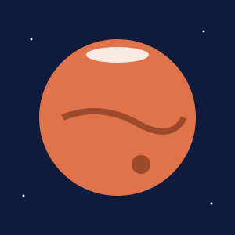

O que é o Sistema Solar?
O Sistema Solar é formado pelo Sol e por tudo que gira ao redor dele: planetas, luas, planetas anões, asteroides e cometas. Ele se formou há cerca de 4,6 bilhões de anos, a partir de uma nuvem de gás e poeira que colapsou pela ação da gravidade.

O Sol
A estrela do sistema
O Sol concentra cerca de 99,86% da massa do Sistema Solar. Por isso, sua gravidade mantém todos os outros corpos em órbita. Ele é feito principalmente de hidrogênio e hélio e produz energia por fusão nuclear.
Distância da Terra
A Terra está a cerca de 149,6 milhões de quilômetros do Sol. A luz solar leva pouco mais de 8 minutos para chegar até nós.
Os planetas
Planetas rochosos
Mercúrio, Vênus, Terra e Marte são pequenos, têm superfície sólida e ficam mais perto do Sol. Vênus é o mais quente, com cerca de 465 °C na superfície, por causa do intenso efeito estufa.
Planetas gigantes
Júpiter e Saturno são gigantes gasosos. Urano e Netuno são gigantes de gelo. Todos ficam longe do Sol e possuem anéis e muitas luas.

Outros corpos
Plutão, Ceres, Éris, Haumea e Makemake são planetas anões. Os asteroides são corpos rochosos, concentrados principalmente entre Marte e Júpiter. Os cometas são feitos de gelo e poeira e formam uma cauda quando se aproximam do Sol.
Galeria: planetas rochosos



Referências
- NASA. Solar System Exploration. Disponível em: https://science.nasa.gov/solar-system/. Acesso em: 17 out. 2026.
- União Astronômica Internacional (IAU). Resolution B5: Definition of a Planet, 2006. Disponível em: https://www.iau.org.
- Todas as figuras são ilustrações originais do autor.